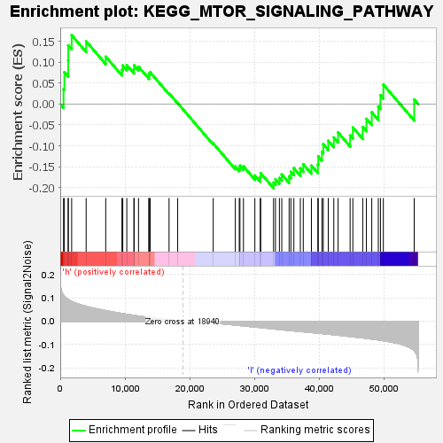
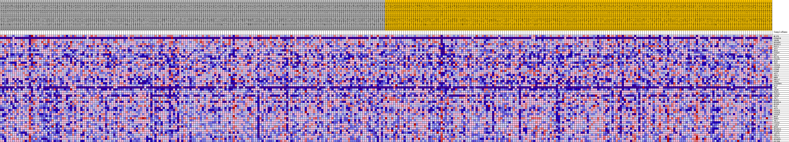

| | | Dataset | VCAN.VCAN.cls#h_versus_l.VCAN.cls#h_versus_l_repos |
| Phenotype | VCAN.cls#h_versus_l_repos |
| Upregulated in class | l |
| GeneSet | KEGG_MTOR_SIGNALING_PATHWAY |
| Enrichment Score (ES) | -0.20150909 |
| Normalized Enrichment Score (NES) | -0.75775844 |
| Nominal p-value | 0.86247545 |
| FDR q-value | 1.0 |
| FWER p-Value | 1.0 |
Table: GSEA Results Summary

Fig 1: Enrichment plot: KEGG_MTOR_SIGNALING_PATHWAY
Profile of the Running ES Score & Positions of GeneSet Members on the Rank Ordered List
| SYMBOL | TITLE | RANK IN GENE LIST | RANK METRIC SCORE | RUNNING ES | CORE ENRICHMENT | | 1 | MLST8 | na | 507 | 0.111 | 0.0356 | No |
| 2 | EIF4E1B | na | 637 | 0.106 | 0.0763 | No |
| 3 | VEGFB | na | 1224 | 0.093 | 0.1032 | No |
| 4 | RPS6KB2 | na | 1238 | 0.093 | 0.1404 | No |
| 5 | RPS6KA1 | na | 1762 | 0.084 | 0.1649 | No |
| 6 | HIF1A | na | 4001 | 0.064 | 0.1501 | No |
| 7 | AKT2 | na | 7025 | 0.045 | 0.1135 | No |
| 8 | RPS6 | na | 9534 | 0.033 | 0.0814 | No |
| 9 | EIF4E2 | na | 9658 | 0.032 | 0.0923 | No |
| 10 | PGF | na | 10281 | 0.030 | 0.0930 | No |
| 11 | DDIT4 | na | 11379 | 0.025 | 0.0833 | No |
| 12 | PIK3R5 | na | 11413 | 0.025 | 0.0927 | No |
| 13 | ULK3 | na | 12090 | 0.022 | 0.0894 | No |
| 14 | IGF1 | na | 13694 | 0.016 | 0.0668 | No |
| 15 | PIK3CD | na | 13702 | 0.016 | 0.0732 | No |
| 16 | PIK3R3 | na | 13890 | 0.015 | 0.0760 | No |
| 17 | EIF4E | na | 16807 | 0.006 | 0.0255 | No |
| 18 | EIF4B | na | 18142 | 0.002 | 0.0021 | No |
| 19 | AKT1 | na | 23629 | -0.007 | -0.0944 | No |
| 20 | STK11 | na | 27046 | -0.017 | -0.1496 | No |
| 21 | RHEB | na | 27652 | -0.018 | -0.1532 | No |
| 22 | PRKAA2 | na | 27759 | -0.018 | -0.1477 | No |
| 23 | VEGFA | na | 28299 | -0.020 | -0.1494 | No |
| 24 | EIF4EBP1 | na | 30063 | -0.025 | -0.1713 | No |
| 25 | ULK1 | na | 30893 | -0.027 | -0.1754 | No |
| 26 | INS | na | 30964 | -0.027 | -0.1656 | No |
| 27 | VEGFC | na | 32948 | -0.033 | -0.1882 | Yes |
| 28 | MAPK1 | na | 33245 | -0.034 | -0.1800 | Yes |
| 29 | STRADA | na | 33856 | -0.035 | -0.1768 | Yes |
| 30 | VEGFD | na | 34221 | -0.036 | -0.1687 | Yes |
| 31 | TSC2 | na | 35355 | -0.039 | -0.1734 | Yes |
| 32 | MAPK3 | na | 35627 | -0.040 | -0.1621 | Yes |
| 33 | RPS6KA6 | na | 36089 | -0.041 | -0.1538 | Yes |
| 34 | RPTOR | na | 37088 | -0.044 | -0.1542 | Yes |
| 35 | ULK2 | na | 37542 | -0.045 | -0.1442 | Yes |
| 36 | AKT3 | na | 38800 | -0.048 | -0.1474 | Yes |
| 37 | PIK3CG | na | 39795 | -0.051 | -0.1448 | Yes |
| 38 | PIK3CB | na | 39858 | -0.051 | -0.1252 | Yes |
| 39 | PIK3R2 | na | 40426 | -0.053 | -0.1142 | Yes |
| 40 | BRAF | na | 40633 | -0.053 | -0.0964 | Yes |
| 41 | PDPK1 | na | 41401 | -0.055 | -0.0879 | Yes |
| 42 | TSC1 | na | 42257 | -0.058 | -0.0801 | Yes |
| 43 | PIK3R1 | na | 42920 | -0.060 | -0.0680 | Yes |
| 44 | CAB39 | na | 44776 | -0.065 | -0.0753 | Yes |
| 45 | MTOR | na | 45198 | -0.067 | -0.0560 | Yes |
| 46 | RPS6KA3 | na | 46725 | -0.071 | -0.0548 | Yes |
| 47 | RPS6KA2 | na | 47292 | -0.073 | -0.0355 | Yes |
| 48 | CAB39L | na | 48120 | -0.076 | -0.0197 | Yes |
| 49 | PRKAA1 | na | 49134 | -0.080 | -0.0058 | Yes |
| 50 | PIK3CA | na | 49464 | -0.081 | 0.0210 | Yes |
| 51 | RPS6KB1 | na | 49912 | -0.083 | 0.0465 | Yes |
| 52 | RICTOR | na | 54677 | -0.125 | 0.0107 | Yes |
Table: GSEA details [plain text format]

Fig 2: KEGG_MTOR_SIGNALING_PATHWAY
Blue-Pink O' Gram in the Space of the Analyzed GeneSet
Fig 3: KEGG_MTOR_SIGNALING_PATHWAY: Random ES distribution
Gene set null distribution of ES for KEGG_MTOR_SIGNALING_PATHWAY